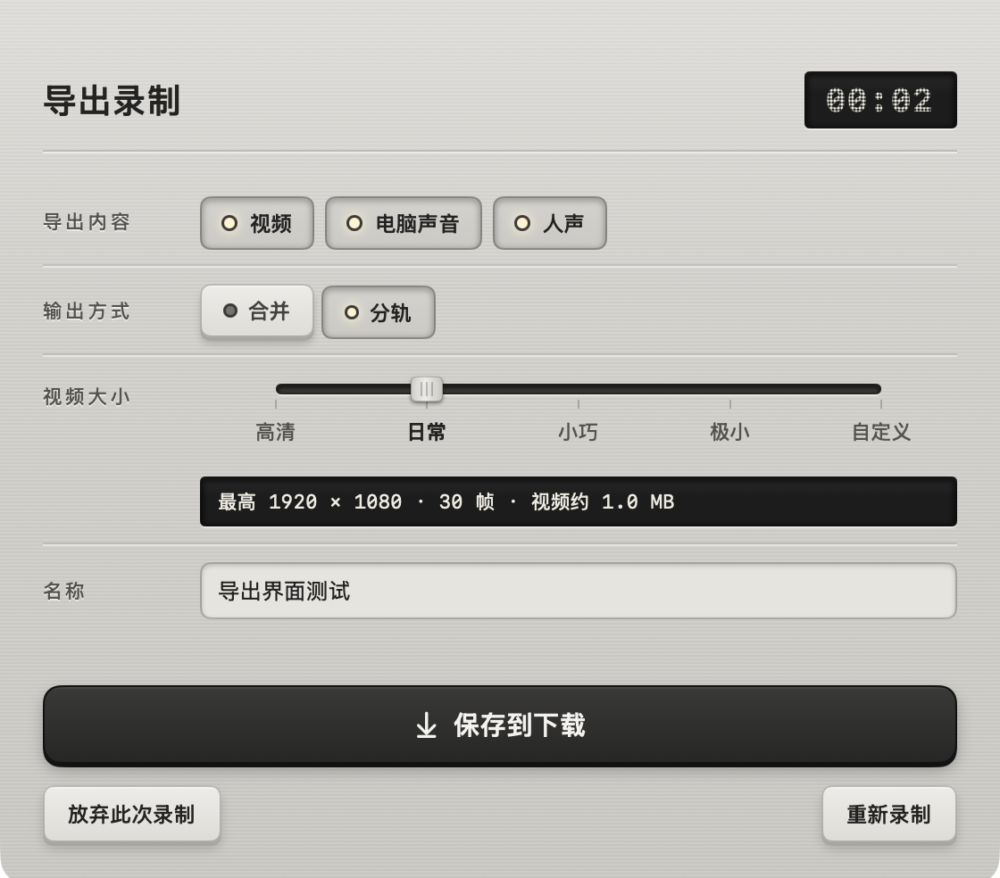

SCREEN RECORDER FOR MACV 1.1.1 / LOCAL FIRST
器物之形，轻巧之用。
极简录屏，
自在导出。
像一台趁手的录音机，
把屏幕上的此刻，好好留下。
录下浏览器、整个屏幕或任意区域。
视频、电脑声音、人声，按需合并或分轨。
macOS 14+ · Apple Silicon / Intel · 约 2.2 MB
DESIGNED TO RECORD.
01 / 录前面板真实 Mac 界面
拉丝铝面板 / 旋钮 / 实体键查看 2× 原图 ↗
03录制来源
05视频大小档位
LOCAL全程本地处理
MIT开源 · 无第三方库
01 / DESIGN LANGUAGE器物 · Instrument
SNAP RECORDERINSTRUMENT
拉丝铝 × 石墨 × 信号橙
给数字工具，
一点器物的温度。
我们想做一件简洁、可靠、愿意常放手边的工具。灵感来自做工考究的录音机：材质有触感，操作有回应，状态一眼可知。
- 01 铝灰为底，石墨为字
- 细密拉丝、机加工刻线与上亮下暗的光影，构成安静、连续的操作面板。
- 02 让状态有位置、有触感
- 旋钮指向来源，拨杆表示开关，按键下沉、灯亮起；读数收进深色显示窗。
- 把橙色，留给录制
- 信号橙只标记开始录制与录制状态。其余交给铝、石墨与暖白，让注意力回到画面。
查看正式视觉规范 ↗
02 / CAPTURE把范围选好，按下录制。
三种来源，
刚好覆盖日常。
保留原始比例，让你想展示的画面成为主角。
01
浏览器窗口
只录选中的窗口，完整保留原始比例。其他应用与桌面不会进入成片。
适合网页演示与产品介绍
02
整个屏幕
录制当前主显示器，保持原生像素与画面比例。跨应用的工作过程，一次记下。
适合教学与完整工作流
03
局部录像
框住需要的部分。七种比例、圆角与聚焦蒙版，既可自由调整，也可锁定构图。
⌘E 锁定范围 · ⌘R 开始录制
03 / EXPORT一次录制，多种去处。
02 / 导出工作区真实 Mac 界面

深色显示窗 / 互锁键 / 五挡滑块查看 2× 原图 ↗
留下一份，
也能各留一份。
勾选视频、电脑声音与人声，选择合并或分轨。命名、保存，再为不同用途继续导出。
- 合并MP4
- 画面和所选声音，收进同一个视频。
- 分轨MP4 + M4A
- 无声视频与各路声音，分别保留。
- 只要声音M4A
- 单独导出一路声音，或把两路混合。
原片保留到本次工作结束。重复导出自动编号，已保存的文件不会被覆盖。
五档大小，按用途选择。
OUTPUT / 30 FPS
高清
原始尺寸
保留画面细节日常 默认
最高 1080p
日常演示与分享小巧
最高 720p
进一步节省空间极小
最高 480p
随手记下一段自定义
填写 MB 上限
适配明确的限制
始终保持画面比例。小体积档可能降低尺寸；自定义上限按每个 MP4 计算，最低值会随录制内容提示，独立音频另计。
04 / LOCAL FIRST
你的屏幕，
只留在你的 Mac 上。
无账号、无上传、无统计。屏幕、摄像头与声音都在本机处理，成片直接保存到「下载」。
PROCESSING LOCATIONON YOUR MAC 本地采集 / 本地编码 / 本地保存
从开始到保存，
保持简单。
THE RECORDING FLOW
- 01
选择来源
画面范围与声音，按需开启。
- 02
录制
3 秒倒计时，随时暂停或结束。
- 03
命名与导出
确认保存，也可继续导出一份。
- 版本
- 1.1.1 / build 18 · Universal ZIP 约 2.2 MB
- 平台
- macOS 14+ · Apple Silicon / Intel
人声录制需 macOS 15+
- 画面
- 原生像素优先，最高约 3840 × 2160
采集与导出最高 30 帧/秒
- 输出
- MP4 / H.264 / SDR / Rec.709
M4A / AAC
- 人像与鼠标
- 摄像头画中画、可选自然修饰
白色准星、点击波纹与隐藏鼠标
- 开放与边界
- MIT 开源 · 无第三方库
不含编辑器、剪辑、多显示器选择或云分享

READY WHEN YOU ARE.
下一次想记录时，
它就在手边。
下载后拖入「应用程序」，开始你的第一段录屏。
macOS 14+ · Apple Silicon / Intel · 约 2.2 MB
尚未经过 Apple 公证；首次启动如被拦截，请右键选择「打开」，或在系统设置的「隐私与安全性」中允许。安装说明 ↗